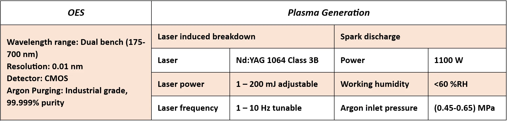

LASPARK
Benchtop OESThis cutting-edge LIB-Spark OES hybrid instrumentation combines the spark discharge and laser ablation techniques for elemental analysis of different types of materials. Optical emission spectroscopy (OES) of induced plasma by hybrid methods indicates significant advantages comparing each individual method. Synergic analysis is promising in dominating measurement challenges of matrix effects, weak and unstable plasma intensity.
As a result, the combined methodology offers the users to with upgraded LOD and LOQ to meet the ever-increasing needs of academic or industrial laboratories. The complex system is efficient in assessment of all types of materials against spark OES which is only capable of metals’ characterization. Furthermore, the conjugated plasma benefits the negligible ablation content against standard LIBS. The real-time detection provides fast measurement in less than 5 S.

LASPARK
OESBuilt to deliver fast, repeatable, and highly accurate results, it excels in precise detection of both heavy and light elements, including those that traditional XRF often fails to measure. With its extended UV capability, this system is the ideal solution for high-performance elemental analysis across metals, minerals, and alloys. The system is capable in detection of more than 30 elements with < 10 ppm limit of detection.
Combining reliability, accuracy, speed and adaptability the hybrid LIBS-Spark OES module is more than just an absolute analyzer. However, it provides a universal solution for industries requiring uncompromised in-situ performance. Through optimized operational costs but delivering laboratory-level precision
LASPARK
acts as an innovative frugal benchmark for elemental analysis in today’s demanding world
{kind=link}